library(tidyverse)
library(patchwork)
library(sf)
DATA_DIR <- "../bolivia-data/Censo 2024/base_datos_csv_2024"Bolivia CEL comparison — 2001 vs 2024
Background
This document compares the Condición Étnico-Lingüística (CEL) classification of Bolivian municipalities between the 2001 census (as published by Albó & Romero 2009) and the 2024 census (CPV 2024). The CEL scale assigns each person a level 0–7 based on indigenous self-identification, language use, childhood language, and Castellano use. Municipalities are further classified into letter groups A–I based on threshold shares at CEL ≥ 5, ≥ 4, and ≥ 2.
| Group | CEL ≥ 5 | CEL ≥ 4 | CEL ≥ 2 |
|---|---|---|---|
| A | ≥ 90% | ≥ 90% | ≥ 90% |
| B | > 67% | > 80% | > 90% |
| C | > 50% | > 67% | > 67% |
| D | > 33% | > 50% | > 67% |
| E | — | — | > 75% |
| F | — | — | > 50% |
| G | — | — | > 33% |
| H | — | — | > 10% |
| I | < 10% in all categories |
Setup
Load data
# 2001 Albó & Romero data (327 municipalities)
albo_2001 <- readRDS("data-raw/albo_romero_autonomias_anexo1.rds")
# 2024 CEL geographic summary (municipality level)
cel_2024 <- readRDS(file.path(DATA_DIR, "cel_geo.rds")) |>
filter(!is.na(municipality), is.na(urban_rural)) |>
mutate(cod_mun = sprintf("%02d%02d%02d", department, province, municipality))
# Population data
pop <- readRDS("data/census_table_municipios_2012u.rds") |>
select(cod.mun, mun_name = municipality, t_2001, t_2012)
# Municipality boundaries (GADM) with pre-built INE code crosswalk
gadm_sf <- st_read("data/gadm41_BOL_3.gpkg", layer = "ADM_ADM_3", quiet = TRUE) |>
select(NAME_1, NAME_3, geom)
gadm_lookup <- readRDS("data/gadm_lookup.rds")Assign letter groups to 2001 data
The 2001 data has CEL percentages in columns cel_0_nnn through cel_7_sss and pre-computed threshold columns crit_orig_5a7, crit_orig_4a7, crit_orig_2a7. We use these to assign letter groups.
assign_albo_group <- function(cel_5plus, cel_4plus, cel_2plus) {
case_when(
cel_5plus >= 90 & cel_4plus >= 90 & cel_2plus >= 90 ~ "A",
cel_5plus > 67 & cel_4plus > 80 & cel_2plus > 90 ~ "B",
cel_5plus > 50 & cel_4plus > 67 & cel_2plus > 67 ~ "C",
cel_5plus > 33 & cel_4plus > 50 & cel_2plus > 67 ~ "D",
cel_2plus > 75 ~ "E",
cel_2plus > 50 ~ "F",
cel_2plus > 33 ~ "G",
cel_2plus > 10 ~ "H",
TRUE ~ "I"
)
}
albo_2001 <- albo_2001 |>
mutate(
group_2001 = assign_albo_group(crit_orig_5a7, crit_orig_4a7, crit_orig_2a7)
)
albo_2001 |> count(group_2001) |> mutate(pct = round(100 * n / sum(n), 1))# A tibble: 9 × 3
group_2001 n pct
<chr> <int> <dbl>
1 A 73 22.3
2 B 87 26.6
3 C 26 8
4 D 27 8.3
5 E 7 2.1
6 F 24 7.3
7 G 32 9.8
8 H 32 9.8
9 I 19 5.8cel_2024 <- cel_2024 |>
mutate(
group_2024 = assign_albo_group(cel_5plus, cel_4plus, cel_2plus)
)
cel_2024 |> count(group_2024) |> mutate(pct = round(100 * n / sum(n), 1))# A tibble: 8 × 3
group_2024 n pct
<chr> <int> <dbl>
1 B 48 14
2 C 99 28.9
3 D 25 7.3
4 E 4 1.2
5 F 54 15.7
6 G 37 10.8
7 H 62 18.1
8 I 14 4.1Build comparison dataset
Join 2001 and 2024 on municipal code. Only the 327 municipalities present in both censuses are included; 16 post-2001 municipalities appear only in 2024.
comparison <- albo_2001 |>
select(codigo, municipality_2001 = municipality, department,
group_2001, cel5_2001 = crit_orig_5a7, cel4_2001 = crit_orig_4a7,
cel2_2001 = crit_orig_2a7) |>
inner_join(
cel_2024 |>
select(cod_mun, group_2024, cel5_2024 = cel_5plus, cel4_2024 = cel_4plus,
cel2_2024 = cel_2plus, n_2024 = n_total),
by = c("codigo" = "cod_mun")
) |>
left_join(pop |> select(cod.mun, mun_name, t_2001, t_2012),
by = c("codigo" = "cod.mun"))
comparison <- comparison |>
mutate(
group_2001 = factor(group_2001, levels = LETTERS[1:9]),
group_2024 = factor(group_2024, levels = LETTERS[1:9]),
# Numeric rank for direction of change
rank_2001 = as.integer(group_2001),
rank_2024 = as.integer(group_2024),
direction = case_when(
rank_2024 < rank_2001 ~ "More indigenous",
rank_2024 > rank_2001 ~ "Less indigenous",
TRUE ~ "No change"
)
)
nrow(comparison)[1] 327Choropleth maps
# Join GADM geometry to comparison via the pre-built lookup
map_data <- gadm_sf |>
inner_join(gadm_lookup |> select(gadm_dep, gadm_mun, cod.mun),
by = c("NAME_1" = "gadm_dep", "NAME_3" = "gadm_mun")) |>
left_join(comparison |> select(codigo, group_2001, group_2024),
by = c("cod.mun" = "codigo")) |>
mutate(
group_2001 = factor(group_2001, levels = LETTERS[1:9]),
group_2024 = factor(group_2024, levels = LETTERS[1:9]),
shift = as.integer(group_2024) - as.integer(group_2001)
)group_colors <- c(
A = "#053061", B = "#2166ac", C = "#4393c3", D = "#74add1",
E = "#c2e0f0", F = "#fee090", G = "#fdae61", H = "#f46d43", I = "#d73027"
)ggplot(map_data) +
geom_sf(aes(fill = group_2001), color = "white", linewidth = 0.15) +
scale_fill_manual(values = group_colors, na.value = "grey90",
drop = FALSE, name = "Group") +
labs(title = "CEL municipality groups — Census 2001") +
theme_void(base_size = 11) +
theme(legend.position = "right")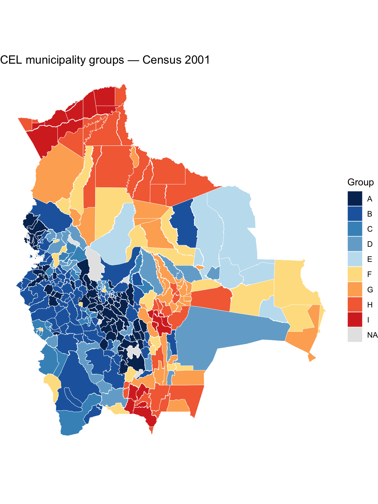
ggplot(map_data) +
geom_sf(aes(fill = group_2024), color = "white", linewidth = 0.15) +
scale_fill_manual(values = group_colors, na.value = "grey90",
drop = FALSE, name = "Group") +
labs(title = "CEL municipality groups — Census 2024") +
theme_void(base_size = 11) +
theme(legend.position = "right")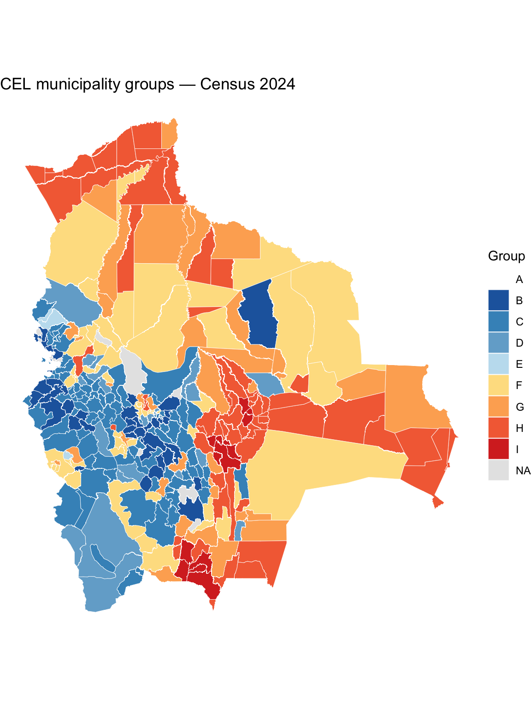
ggplot(map_data) +
geom_sf(aes(fill = shift), color = "white", linewidth = 0.15) +
scale_fill_gradient2(
low = "#2166ac", mid = "white", high = "#f46d43", midpoint = 0,
limits = c(-6, 6), breaks = seq(-4, 4, 2),
na.value = "grey90", name = "Levels\nchanged"
) +
labs(
title = "Change in CEL group: 2001 → 2024",
subtitle = "Blue = more indigenous | Orange = less indigenous"
) +
theme_void(base_size = 11) +
theme(legend.position = "right")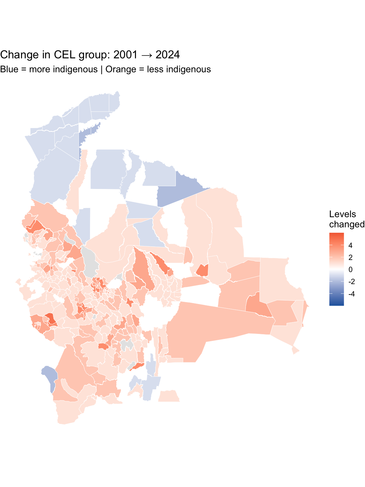
Transition matrix
trans <- comparison |>
count(group_2001, group_2024, .drop = FALSE) |>
pivot_wider(names_from = group_2024, values_from = n, values_fill = 0L,
names_prefix = "to_")
trans |>
rename(`2001 ↓ / 2024 →` = group_2001) |>
knitr::kable(align = c("l", rep("r", 9)))| 2001 ↓ / 2024 → | to_A | to_B | to_C | to_D | to_E | to_F | to_G | to_H | to_I |
|---|---|---|---|---|---|---|---|---|---|
| A | 0 | 34 | 35 | 2 | 2 | 0 | 0 | 0 | 0 |
| B | 0 | 7 | 56 | 13 | 0 | 10 | 1 | 0 | 0 |
| C | 0 | 0 | 2 | 5 | 1 | 15 | 3 | 0 | 0 |
| D | 0 | 0 | 0 | 3 | 0 | 14 | 6 | 4 | 0 |
| E | 0 | 0 | 0 | 0 | 0 | 4 | 2 | 1 | 0 |
| F | 0 | 0 | 0 | 1 | 0 | 2 | 12 | 9 | 0 |
| G | 0 | 0 | 0 | 0 | 0 | 5 | 7 | 20 | 0 |
| H | 0 | 0 | 0 | 0 | 0 | 3 | 6 | 19 | 4 |
| I | 0 | 0 | 0 | 0 | 0 | 0 | 0 | 9 | 10 |
comparison |>
count(group_2001, group_2024, .drop = FALSE) |>
ggplot(aes(x = group_2024, y = fct_rev(group_2001), fill = n)) +
geom_tile(color = "white", linewidth = 0.5) +
geom_text(aes(label = if_else(n > 0, as.character(n), "")), size = 3.5) +
scale_fill_gradient(low = "white", high = "#2166ac", guide = "none") +
labs(
title = "Municipality group transitions: 2001 → 2024",
subtitle = "n = 327 municipalities present in both censuses",
x = "2024 group", y = "2001 group"
) +
theme_minimal(base_size = 12) +
coord_equal()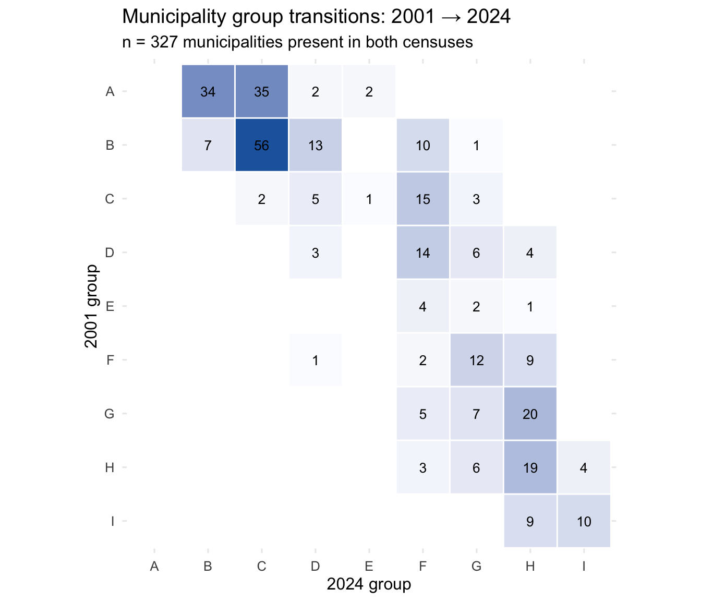
Direction of change
comparison |>
count(direction) |>
mutate(pct = round(100 * n / sum(n), 1)) |>
arrange(desc(n))# A tibble: 3 × 3
direction n pct
<chr> <int> <dbl>
1 Less indigenous 253 77.4
2 No change 50 15.3
3 More indigenous 24 7.3comparison |>
count(department, direction) |>
group_by(department) |>
mutate(pct = n / sum(n)) |>
ungroup() |>
mutate(
direction = factor(direction,
levels = c("More indigenous", "No change", "Less indigenous")),
department = fct_reorder(department, pct * (direction == "Less indigenous"), sum)
) |>
ggplot(aes(x = pct, y = department, fill = direction)) +
geom_col() +
scale_x_continuous(labels = scales::percent_format()) +
scale_fill_manual(values = c(
"More indigenous" = "#2166ac",
"No change" = "#d9d9d9",
"Less indigenous" = "#f46d43"
)) +
labs(
title = "Direction of CEL group change by department",
subtitle = "2001 → 2024 | 327 municipalities",
x = "Share of municipalities", y = NULL, fill = NULL
) +
theme_minimal(base_size = 11) +
theme(legend.position = "bottom")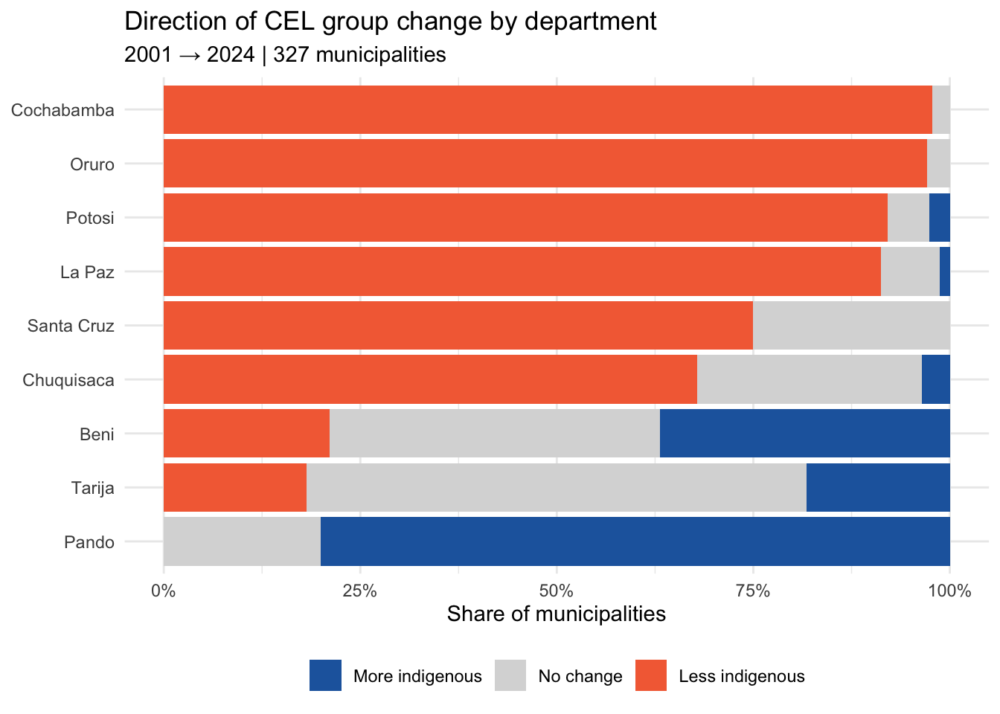
Change in CEL ≥ 2 (any indigenous dimension)
ggplot(comparison, aes(x = cel2_2001, y = cel2_2024)) +
geom_abline(slope = 1, intercept = 0, linetype = "dashed", color = "grey50") +
geom_point(aes(color = department), alpha = 0.6, size = 1.8) +
labs(
title = "CEL ≥ 2 share: 2001 vs 2024",
subtitle = "Points below the diagonal shifted toward less indigenous identification",
x = "2001 (% CEL ≥ 2)", y = "2024 (% CEL ≥ 2)",
color = "Department"
) +
theme_minimal(base_size = 11) +
theme(legend.position = "right")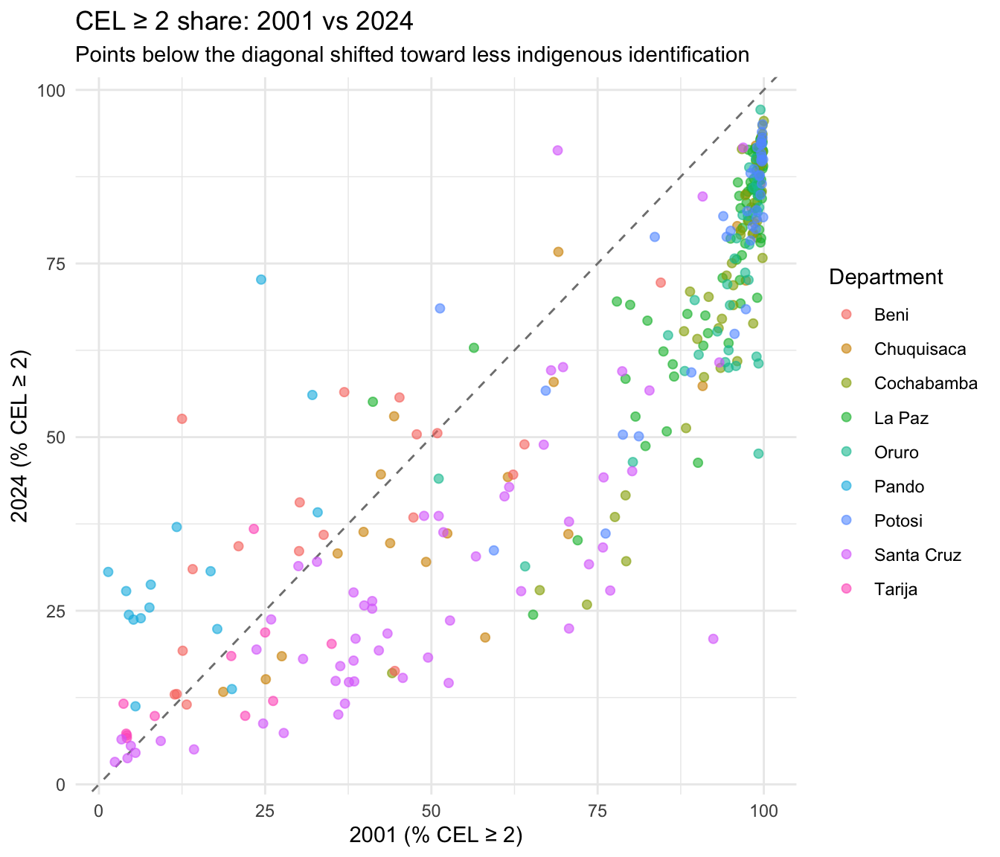
Change in CEL ≥ 5 (strong indigenous profile)
ggplot(comparison, aes(x = cel5_2001, y = cel5_2024)) +
geom_abline(slope = 1, intercept = 0, linetype = "dashed", color = "grey50") +
geom_point(aes(color = department), alpha = 0.6, size = 1.8) +
labs(
title = "CEL ≥ 5 share: 2001 vs 2024",
subtitle = "Points below the diagonal shifted toward less indigenous identification",
x = "2001 (% CEL ≥ 5)", y = "2024 (% CEL ≥ 5)",
color = "Department"
) +
theme_minimal(base_size = 11) +
theme(legend.position = "right")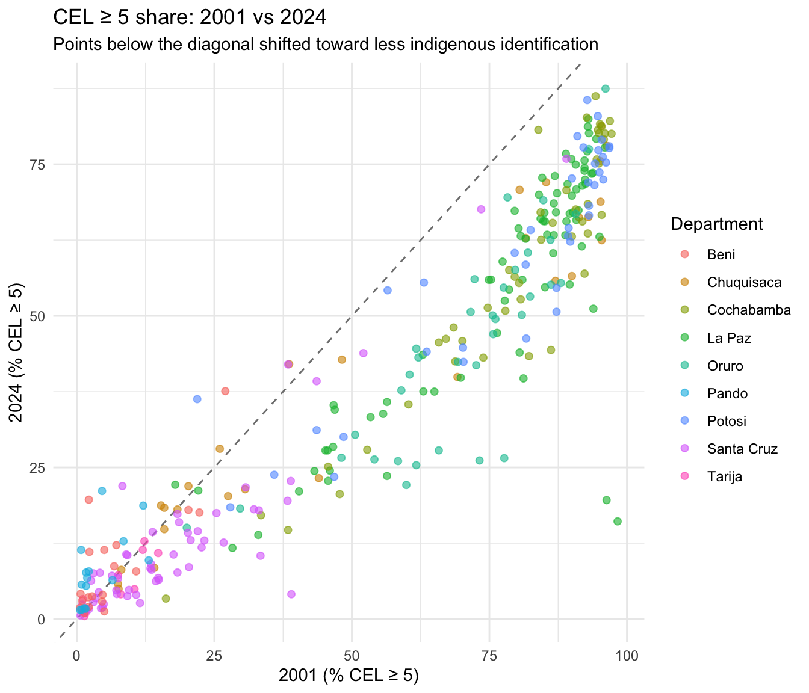
Alluvial: group transitions
# Stacked bar pairs showing 2001 vs 2024 distribution
group_colors <- c(
A = "#053061", B = "#2166ac", C = "#4393c3", D = "#74add1",
E = "#c2e0f0", F = "#fee090", G = "#fdae61", H = "#f46d43", I = "#d73027"
)
p_2001 <- comparison |>
count(group_2001) |>
mutate(pct = n / sum(n)) |>
ggplot(aes(x = pct, y = "2001", fill = group_2001)) +
geom_col(width = 0.6) +
scale_fill_manual(values = group_colors, drop = FALSE) +
scale_x_continuous(labels = scales::percent_format()) +
labs(x = NULL, y = NULL, fill = "Group") +
theme_minimal(base_size = 11) +
theme(axis.text.y = element_text(face = "bold", size = 12))
p_2024 <- comparison |>
count(group_2024) |>
mutate(pct = n / sum(n)) |>
ggplot(aes(x = pct, y = "2024", fill = group_2024)) +
geom_col(width = 0.6) +
scale_fill_manual(values = group_colors, drop = FALSE) +
scale_x_continuous(labels = scales::percent_format()) +
labs(x = "Share of municipalities", y = NULL, fill = "Group") +
theme_minimal(base_size = 11) +
theme(axis.text.y = element_text(face = "bold", size = 12))
(p_2001 / p_2024) +
plot_layout(guides = "collect") +
plot_annotation(
title = "Municipality CEL group distribution: 2001 vs 2024",
subtitle = "327 municipalities present in both censuses"
) &
theme(legend.position = "bottom")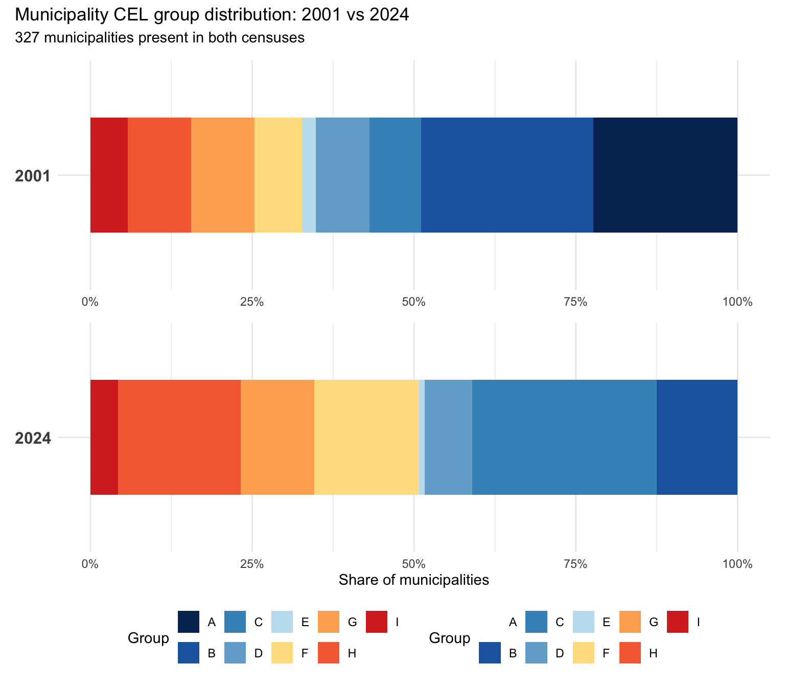
Shift magnitude
comparison |>
mutate(shift = rank_2024 - rank_2001) |>
count(shift) |>
mutate(
pct = n / sum(n),
fill_col = case_when(shift < 0 ~ "blue", shift == 0 ~ "grey", TRUE ~ "red")
) |>
ggplot(aes(x = shift, y = n, fill = fill_col)) +
geom_col(show.legend = FALSE) +
geom_text(aes(label = n), vjust = -0.3, size = 3.5) +
scale_fill_manual(values = c(blue = "#2166ac", grey = "#d9d9d9", red = "#f46d43")) +
scale_x_continuous(breaks = -8:8) +
labs(
title = "Magnitude of CEL group shifts (2001 → 2024)",
subtitle = "Negative = became more indigenous; Positive = became less indigenous",
x = "Group shift (letters)", y = "Number of municipalities"
) +
theme_minimal(base_size = 11)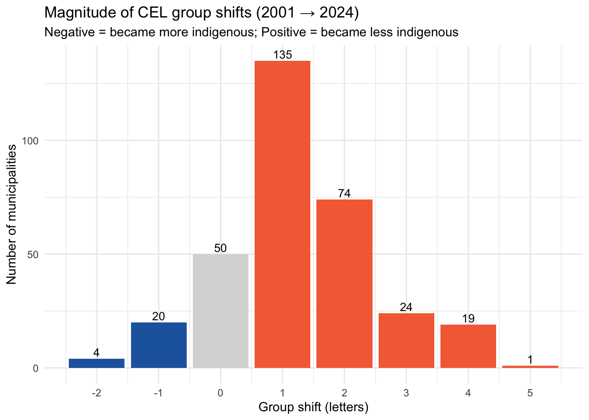
Largest shifts
comparison |>
mutate(shift = rank_2024 - rank_2001) |>
arrange(desc(abs(shift))) |>
select(codigo, mun_name, department, group_2001, group_2024, shift,
cel2_2001, cel2_2024, cel5_2001, cel5_2024) |>
head(20) |>
knitr::kable(digits = 1)| codigo | mun_name | department | group_2001 | group_2024 | shift | cel2_2001 | cel2_2024 | cel5_2001 | cel5_2024 |
|---|---|---|---|---|---|---|---|---|---|
| 040502 | Escara | Oruro | B | G | 5 | 99.2 | 47.6 | 77.7 | 26.5 |
| 010703 | Incahuasi | Chuquisaca | B | F | 4 | 90.8 | 57.4 | 69.2 | 39.9 |
| 020104 | Achocalla | La Paz | B | F | 4 | 94.7 | 63.5 | 69.8 | 39.8 |
| 021006 | Villa Libertad Licoma | La Paz | C | G | 4 | 90.1 | 46.3 | 56.4 | 23.6 |
| 021601 | Charazani | La Paz | A | E | 4 | 99.7 | 90.7 | 96.3 | 19.6 |
| 021602 | Curva | La Paz | A | E | 4 | 99.8 | 91.4 | 98.3 | 16.1 |
| 030203 | Omereque | Cochabamba | B | F | 4 | 93.2 | 65.7 | 70.1 | 45.9 |
| 030403 | Arbieto | Cochabamba | B | F | 4 | 96.0 | 60.9 | 82.2 | 43.4 |
| 030702 | Santivañez | Cochabamba | B | F | 4 | 98.4 | 66.4 | 86.2 | 44.4 |
| 030803 | Tolata | Cochabamba | B | F | 4 | 91.0 | 58.6 | 68.8 | 42.5 |
| 030902 | Sipe Sipe | Cochabamba | B | F | 4 | 93.5 | 60.0 | 73.9 | 43.1 |
| 030903 | Tiquipaya | Cochabamba | D | H | 4 | 79.3 | 32.1 | 47.8 | 20.6 |
| 030905 | Colcapirhua | Cochabamba | D | H | 4 | 73.4 | 25.9 | 38.4 | 14.7 |
| 031001 | Sacaba | Cochabamba | C | G | 4 | 79.2 | 41.6 | 52.8 | 27.9 |
| 040505 | Esmeralda | Oruro | B | F | 4 | 99.2 | 60.6 | 73.2 | 26.1 |
| 040601 | Poopó | Oruro | B | F | 4 | 95.8 | 60.2 | 72.6 | 41.9 |
| 040701 | Huanuni | Oruro | C | G | 4 | 80.3 | 46.4 | 50.6 | 30.4 |
| 051203 | Porco | Potosi | B | F | 4 | 95.6 | 64.9 | 70.3 | 42.4 |
| 071005 | San Pedro | Santa Cruz | D | H | 4 | 70.7 | 22.4 | 33.4 | 10.4 |
| 071105 | San Antonio de Lomerío | Santa Cruz | D | H | 4 | 92.4 | 21.0 | 39.0 | 4.1 |
Bubble chart: indigenous identity × indigenous language × population
This chart places each municipality in a space defined by the share of the population with any indigenous dimension (CEL ≥ 2, x-axis) and the share with strong indigenous identity and language use (CEL ≥ 5, y-axis), with bubble size proportional to municipal population.
library(ggrepel)
major_cities <- c("Sucre", "La Paz", "El Alto", "Cochabamba",
"Santa Cruz de la Sierra")
comparison <- comparison |>
mutate(city_label = if_else(mun_name %in% major_cities, mun_name, NA_character_))ggplot(comparison, aes(x = cel2_2001, y = cel5_2001, size = t_2001)) +
geom_abline(slope = 1, intercept = 0, linetype = "dashed", color = "grey70") +
geom_point(aes(color = department), alpha = 0.55) +
geom_text_repel(aes(label = city_label), size = 3.2, fontface = "bold",
max.overlaps = 20, seed = 4817) +
scale_size_area(max_size = 15, labels = scales::comma,
breaks = c(10000, 50000, 200000, 500000)) +
labs(
title = "Indigenous identity or language — Census 2001",
subtitle = "Bubble size = municipal population (2001)",
x = "% with any indigenous dimension (CEL ≥ 2)",
y = "% with identity + language (CEL ≥ 5)",
size = "Population", color = "Department"
) +
theme_minimal(base_size = 11) +
theme(legend.position = "right")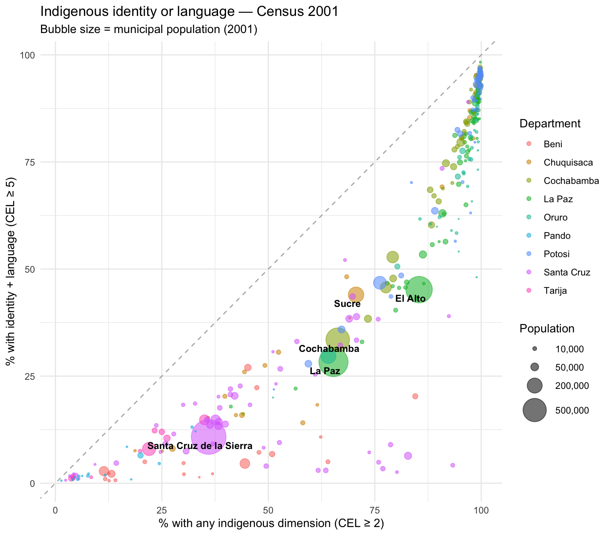
ggplot(comparison, aes(x = cel2_2024, y = cel5_2024, size = n_2024)) +
geom_abline(slope = 1, intercept = 0, linetype = "dashed", color = "grey70") +
geom_point(aes(color = department), alpha = 0.55) +
geom_text_repel(aes(label = city_label), size = 3.2, fontface = "bold",
max.overlaps = 20, seed = 4817) +
scale_size_area(max_size = 15, labels = scales::comma,
breaks = c(10000, 50000, 200000, 500000)) +
labs(
title = "Indigenous identity or language — Census 2024",
subtitle = "Bubble size = municipal population (2024)",
x = "% with any indigenous dimension (CEL ≥ 2)",
y = "% with identity + language (CEL ≥ 5)",
size = "Population", color = "Department"
) +
theme_minimal(base_size = 11) +
theme(legend.position = "right")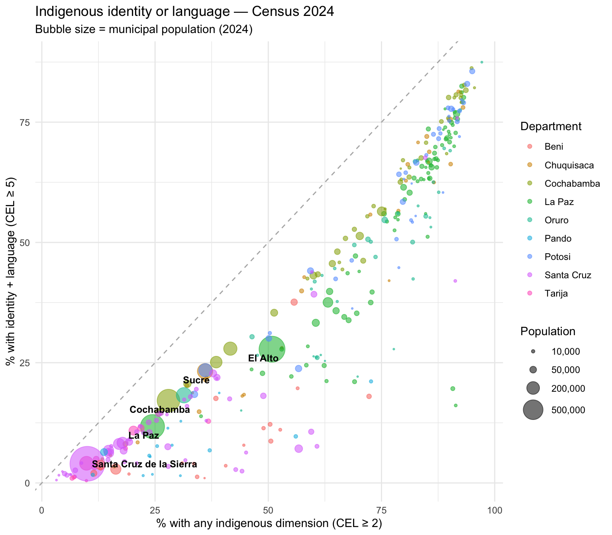
p1 <- ggplot(comparison, aes(x = cel2_2001, y = cel5_2001, size = t_2001)) +
geom_abline(slope = 1, intercept = 0, linetype = "dashed", color = "grey70") +
geom_point(aes(color = department), alpha = 0.55) +
geom_text_repel(aes(label = city_label), size = 2.8, fontface = "bold",
max.overlaps = 20, seed = 4817) +
scale_size_area(max_size = 12, labels = scales::comma,
breaks = c(10000, 50000, 200000, 500000)) +
coord_cartesian(xlim = c(0, 100), ylim = c(0, 100)) +
labs(
title = "2001",
x = "% with any indigenous dimension (CEL ≥ 2)",
y = "% with identity + language (CEL ≥ 5)",
size = "Population", color = "Department"
) +
theme_minimal(base_size = 10)
p2 <- ggplot(comparison, aes(x = cel2_2024, y = cel5_2024, size = n_2024)) +
geom_abline(slope = 1, intercept = 0, linetype = "dashed", color = "grey70") +
geom_point(aes(color = department), alpha = 0.55) +
geom_text_repel(aes(label = city_label), size = 2.8, fontface = "bold",
max.overlaps = 20, seed = 4817) +
scale_size_area(max_size = 12, labels = scales::comma,
breaks = c(10000, 50000, 200000, 500000)) +
coord_cartesian(xlim = c(0, 100), ylim = c(0, 100)) +
labs(
title = "2024",
x = "% with any indigenous dimension (CEL ≥ 2)",
y = "% with identity + language (CEL ≥ 5)",
size = "Population", color = "Department"
) +
theme_minimal(base_size = 10)
(p1 | p2) +
plot_layout(guides = "collect") +
plot_annotation(
title = "Indigenous identity vs. language use by municipality",
subtitle = "327 municipalities present in both censuses"
) &
theme(legend.position = "bottom")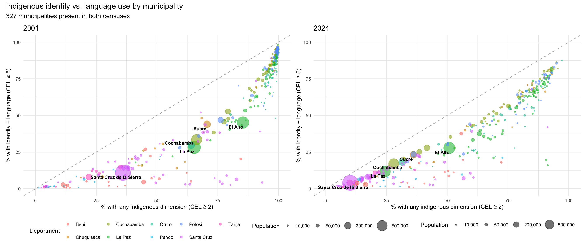
Arrow chart: municipality movement in identity–language space
ggplot(comparison) +
geom_abline(slope = 1, intercept = 0, linetype = "dashed", color = "grey70") +
geom_segment(
aes(x = cel2_2001, y = cel5_2001, xend = cel2_2024, yend = cel5_2024,
color = department),
arrow = arrow(length = unit(0.08, "inches"), type = "closed"),
alpha = 0.4, linewidth = 0.4
) +
# Label major cities at their 2024 (arrow-tip) position
geom_text_repel(
data = comparison |> filter(!is.na(city_label)),
aes(x = cel2_2024, y = cel5_2024, label = city_label),
size = 3.2, fontface = "bold", max.overlaps = 20, seed = 4817
) +
coord_cartesian(xlim = c(0, 100), ylim = c(0, 100)) +
labs(
title = "Municipality shifts in identity–language space: 2001 → 2024",
subtitle = "Arrows point from 2001 position to 2024 position",
x = "% with any indigenous dimension (CEL ≥ 2)",
y = "% with identity + language (CEL ≥ 5)",
color = "Department"
) +
theme_minimal(base_size = 11) +
theme(legend.position = "right")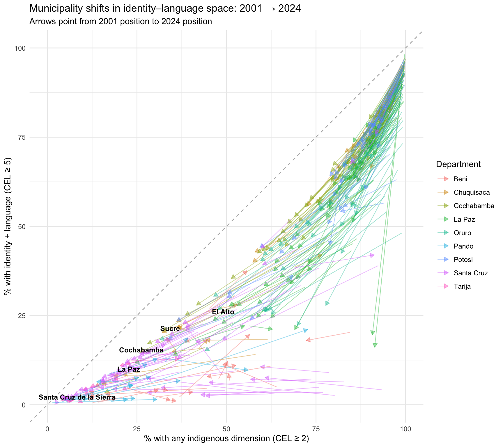
Urban indigenous populations in capital cities
Bolivia’s 10 departmental capitals plus El Alto experienced dramatic declines in indigenous populations across all three CEL thresholds between 2001 and 2024. Unlike most municipalities which shifted modestly, these major urban centers saw wholesale language loss and identity change, reducing their indigenous populations by millions and cutting indigenous shares roughly in half.
capital_cities <- c(
"Sucre", # Chuquisaca
"La Paz", "El Alto", # La Paz
"Cochabamba", # Cochabamba
"Oruro", # Oruro
"Potosí", # Potosí
"Tarija", # Tarija
"Santa Cruz de la Sierra", # Santa Cruz
"Trinidad", # Beni
"Cobija" # Pando
)
# City-level data with absolute numbers
urban_cities <- comparison |>
filter(mun_name %in% capital_cities) |>
select(mun_name, department, t_2001, n_2024,
cel2_2001, cel4_2001, cel5_2001, cel2_2024, cel4_2024, cel5_2024) |>
mutate(
# CEL ≥ 2: any indigenous dimension
ind_2_01 = round(t_2001 * cel2_2001 / 100),
non_ind_2_01 = t_2001 - ind_2_01,
ind_2_24 = round(n_2024 * cel2_2024 / 100),
non_ind_2_24 = n_2024 - ind_2_24,
# CEL ≥ 4: indigenous identity
ind_4_01 = round(t_2001 * cel4_2001 / 100),
non_ind_4_01 = t_2001 - ind_4_01,
ind_4_24 = round(n_2024 * cel4_2024 / 100),
non_ind_4_24 = n_2024 - ind_4_24,
# CEL ≥ 5: identity + language
ind_5_01 = round(t_2001 * cel5_2001 / 100),
non_ind_5_01 = t_2001 - ind_5_01,
ind_5_24 = round(n_2024 * cel5_2024 / 100),
non_ind_5_24 = n_2024 - ind_5_24
) |>
arrange(desc(t_2001))
# Summary totals
urban_summary_total <- tribble(
~threshold, ~status, ~n_2001, ~n_2024,
"CEL ≥ 2", "Indigenous", sum(urban_cities$ind_2_01), sum(urban_cities$ind_2_24),
"CEL ≥ 2", "Non-indigenous", sum(urban_cities$non_ind_2_01), sum(urban_cities$non_ind_2_24),
"CEL ≥ 4", "Indigenous", sum(urban_cities$ind_4_01), sum(urban_cities$ind_4_24),
"CEL ≥ 4", "Non-indigenous", sum(urban_cities$non_ind_4_01), sum(urban_cities$non_ind_4_24),
"CEL ≥ 5", "Indigenous", sum(urban_cities$ind_5_01), sum(urban_cities$ind_5_24),
"CEL ≥ 5", "Non-indigenous", sum(urban_cities$non_ind_5_01), sum(urban_cities$non_ind_5_24),
) |>
mutate(
total_2001 = sum(urban_cities$t_2001),
total_2024 = sum(urban_cities$n_2024),
pct_2001 = round(n_2001 / total_2001 * 100, 1),
pct_2024 = round(n_2024 / total_2024 * 100, 1)
)
urban_summary_total |>
select(threshold, status, n_2001, pct_2001, n_2024, pct_2024) |>
knitr::kable(
digits = c(NA, NA, 0, 1, 0, 1),
col.names = c("CEL Threshold", "Status", "2001 (n)", "2001 (%)", "2024 (n)", "2024 (%)")
)| CEL Threshold | Status | 2001 (n) | 2001 (%) | 2024 (n) | 2024 (%) |
|---|---|---|---|---|---|
| CEL ≥ 2 | Indigenous | 2288547 | 58.5 | 1315004 | 25.5 |
| CEL ≥ 2 | Non-indigenous | 1620724 | 41.5 | 3840989 | 74.5 |
| CEL ≥ 4 | Indigenous | 2189575 | 56.0 | 1181078 | 22.9 |
| CEL ≥ 4 | Non-indigenous | 1719696 | 44.0 | 3974915 | 77.1 |
| CEL ≥ 5 | Indigenous | 1053420 | 26.9 | 704924 | 13.7 |
| CEL ≥ 5 | Non-indigenous | 2855851 | 73.1 | 4451069 | 86.3 |
City-by-city breakdown
CEL ≥ 2 (Any indigenous dimension):
urban_cities |>
select(mun_name, t_2001, ind_2_01, non_ind_2_01, n_2024, ind_2_24, non_ind_2_24) |>
knitr::kable(
digits = 0,
col.names = c("City", "2001 Pop", "2001 Indig", "2001 Non-Indig",
"2024 Pop", "2024 Indig", "2024 Non-Indig")
)| City | 2001 Pop | 2001 Indig | 2001 Non-Indig | 2024 Pop | 2024 Indig | 2024 Non-Indig |
|---|---|---|---|---|---|---|
| Santa Cruz de la Sierra | 1131778 | 407440 | 724338 | 1610982 | 161904 | 1449078 |
| La Paz | 793293 | 518020 | 275273 | 757431 | 185040 | 572391 |
| El Alto | 649958 | 555064 | 94894 | 885825 | 450265 | 435560 |
| Cochabamba | 517024 | 342787 | 174237 | 665505 | 186075 | 479430 |
| Sucre | 214913 | 151729 | 63184 | 296746 | 106947 | 189799 |
| Oruro | 201504 | 129164 | 72340 | 298350 | 93652 | 204698 |
| Tarija | 153457 | 33761 | 119696 | 238749 | 23565 | 215184 |
| Potosí | 145057 | 110533 | 34524 | 218702 | 78995 | 139707 |
| Trinidad | 79963 | 35584 | 44379 | 128589 | 20999 | 107590 |
| Cobija | 22324 | 4465 | 17859 | 55114 | 7562 | 47552 |
CEL ≥ 4 (Indigenous identity):
urban_cities |>
select(mun_name, t_2001, ind_4_01, non_ind_4_01, n_2024, ind_4_24, non_ind_4_24) |>
knitr::kable(
digits = 0,
col.names = c("City", "2001 Pop", "2001 Indig", "2001 Non-Indig",
"2024 Pop", "2024 Indig", "2024 Non-Indig")
)| City | 2001 Pop | 2001 Indig | 2001 Non-Indig | 2024 Pop | 2024 Indig | 2024 Non-Indig |
|---|---|---|---|---|---|---|
| Santa Cruz de la Sierra | 1131778 | 387068 | 744710 | 1610982 | 130167 | 1480815 |
| La Paz | 793293 | 501361 | 291932 | 757431 | 173982 | 583449 |
| El Alto | 649958 | 537515 | 112443 | 885825 | 430954 | 454871 |
| Cochabamba | 517024 | 325208 | 191816 | 665505 | 159522 | 505983 |
| Sucre | 214913 | 138834 | 76079 | 296746 | 85344 | 211402 |
| Oruro | 201504 | 123925 | 77579 | 298350 | 85716 | 212634 |
| Tarija | 153457 | 31152 | 122305 | 238749 | 19267 | 219482 |
| Potosí | 145057 | 105166 | 39891 | 218702 | 68563 | 150139 |
| Trinidad | 79963 | 35104 | 44859 | 128589 | 20420 | 108169 |
| Cobija | 22324 | 4242 | 18082 | 55114 | 7143 | 47971 |
CEL ≥ 5 (Identity + Language):
urban_cities |>
select(mun_name, t_2001, ind_5_01, non_ind_5_01, n_2024, ind_5_24, non_ind_5_24) |>
knitr::kable(
digits = 0,
col.names = c("City", "2001 Pop", "2001 Indig", "2001 Non-Indig",
"2024 Pop", "2024 Indig", "2024 Non-Indig")
)| City | 2001 Pop | 2001 Indig | 2001 Non-Indig | 2024 Pop | 2024 Indig | 2024 Non-Indig |
|---|---|---|---|---|---|---|
| Santa Cruz de la Sierra | 1131778 | 122232 | 1009546 | 1610982 | 64278 | 1546704 |
| La Paz | 793293 | 224502 | 568791 | 757431 | 88771 | 668660 |
| El Alto | 649958 | 293781 | 356177 | 885825 | 246348 | 639477 |
| Cochabamba | 517024 | 173203 | 343821 | 665505 | 113934 | 551571 |
| Sucre | 214913 | 94562 | 120351 | 296746 | 68934 | 227812 |
| Oruro | 201504 | 59847 | 141657 | 298350 | 54389 | 243961 |
| Tarija | 153457 | 12277 | 141180 | 238749 | 9765 | 228984 |
| Potosí | 145057 | 67887 | 77170 | 218702 | 51264 | 167438 |
| Trinidad | 79963 | 3678 | 76285 | 128589 | 3703 | 124886 |
| Cobija | 22324 | 1451 | 20873 | 55114 | 3538 | 51576 |
# Visualize city-level CEL percentages over time
urban_cities |>
select(mun_name, cel2_2001, cel2_2024, cel4_2001, cel4_2024, cel5_2001, cel5_2024) |>
pivot_longer(starts_with("cel"),
names_to = "threshold_year",
values_to = "pct") |>
separate(threshold_year, into = c("cel", "year"), sep = "_") |>
mutate(
threshold = factor(paste0("CEL ≥ ", cel), levels = c("CEL ≥ 2", "CEL ≥ 4", "CEL ≥ 5")),
year = if_else(year == "2001", "2001", "2024"),
mun_name = fct_reorder(mun_name, pct, .fun = mean, .desc = TRUE)
) |>
ggplot(aes(x = mun_name, y = pct, fill = year)) +
geom_col(position = "dodge", width = 0.7) +
facet_wrap(~ threshold, nrow = 1) +
scale_fill_manual(values = c("2001" = "#2166ac", "2024" = "#f46d43"), name = NULL) +
scale_y_continuous(labels = scales::percent_format(scale = 1)) +
labs(
title = "Indigenous populations in capital cities: 2001 vs 2024",
subtitle = "Percentage of population at each CEL threshold",
x = NULL, y = "% of city population"
) +
theme_minimal(base_size = 11) +
theme(
axis.text.x = element_text(angle = 45, hjust = 1),
legend.position = "bottom",
panel.spacing = unit(0.5, "lines")
)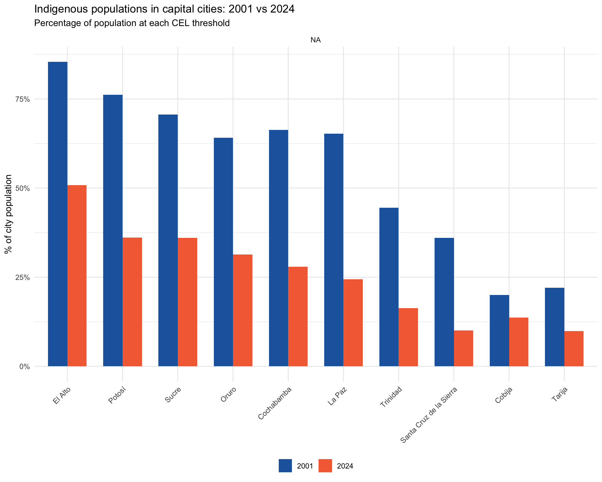
Key findings
- CEL ≥ 2 (any indigenous dimension): 2.29M → 1.32M indigenous; share dropped from 59% to 26%
- CEL ≥ 4 (indigenous identity): 2.19M → 1.18M indigenous; share dropped from 56% to 23%
- CEL ≥ 5 (identity + language): 1.05M → 0.70M indigenous; share dropped from 27% to 14%
All major urban centers experienced dramatic decline in indigenous populations across every threshold. Cities like Santa Cruz and Tarija saw particularly severe shifts, with indigenous shares falling below 10% at the CEL ≥ 2 threshold. The urban-rural indigenous divide has become one of Bolivia’s most pronounced demographic features.
Population-weighted group distribution
# 2001: weight by 2001 population
pw_2001 <- comparison |>
group_by(group_2001) |>
summarise(pop = sum(t_2001, na.rm = TRUE), .groups = "drop") |>
mutate(pct = pop / sum(pop), year = "2001") |>
rename(group = group_2001)
# 2024: weight by 2024 population
pw_2024 <- comparison |>
group_by(group_2024) |>
summarise(pop = sum(n_2024, na.rm = TRUE), .groups = "drop") |>
mutate(pct = pop / sum(pop), year = "2024") |>
rename(group = group_2024)
bind_rows(pw_2001, pw_2024) |>
ggplot(aes(x = pct, y = year, fill = group)) +
geom_col(width = 0.6) +
scale_fill_manual(values = group_colors, drop = FALSE) +
scale_x_continuous(labels = scales::percent_format()) +
labs(
title = "Population-weighted CEL group distribution",
subtitle = "327 municipalities present in both censuses",
x = "Share of population", y = NULL, fill = "Group"
) +
theme_minimal(base_size = 12) +
theme(legend.position = "bottom")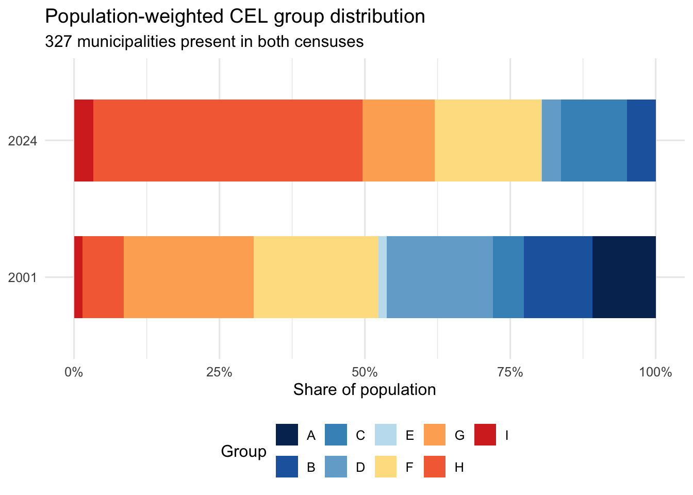